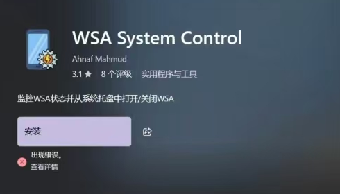

解决微软应用商店无法正常下载软件问题
去年我更新Windows后，想在微软应用商店中下载软件，却发现无法正常下载了，显示报错：0x80072F8F。我在网上搜了很多文章，跟着做，却一直没有解决这个问题。

后来我找到了一个网站，可以直接从该网站下载微软商店的应用，并使用powershell安装。这可以用来代替微软商店来解决这个问题。网站：https://store.rg-adguard.net
使用方法（详见该视频）：
1.在设置中打开“开发人员模式”
2.在微软商店该应用的页面，点击“分享”，并复制链接
3.进入该网站，粘贴链接，搜索。找到与你计算机系统匹配的版本，下载。注意：下载的包后缀一般都带appx或msix，后缀为BlockMap的文件并不是安装包
4.使用管理员权限打开powershell，输入命令：
Add-AppxPackage -Path "下载的安装包路径"安装完成后，在开始菜单中找到该应用，点击运行，查看是否正常运行，若不能请下载其他的版本
注：下载时浏览器可能会报不安全的提示，请忽略，信任即可